1. Phương pháp chung: thử nhiều kiểu biểu đồ trên cùng dữ liệu rồi mới chọn
Một sai lầm thường gặp là mở phần mềm, vẽ ngay một biểu đồ cột hoặc đường, rồi dùng luôn — mà không hỏi "biểu đồ này có thực sự trả lời đúng câu hỏi nghiên cứu không, hay chỉ là kiểu quen tay". Cách làm đúng hơn: trên CÙNG một bộ dữ liệu, thử nhiều kiểu biểu đồ khác nhau (mỗi kiểu nhấn một khía cạnh: xu hướng chung, từng cá thể, thay đổi theo thời gian, độ chắc chắn của kết luận), đặt cạnh nhau so sánh, rồi mới chọn đúng 1-2 kiểu phù hợp nhất để đưa vào báo cáo hoặc slide. Phần dưới đây minh hoạ cách làm này bằng một bộ dữ liệu hoàn toàn khác đề tài của Khánh Linh (nghiên cứu ảnh hưởng của thuốc Captopril lên chu kỳ động dục chuột, so sánh nhóm Control và nhóm dùng thuốc trước/sau 7 ngày) — mượn tạm để thấy 12 kiểu biểu đồ khác nhau mô tả cùng một hiện tượng theo chu kỳ/trạng thái sẽ khác nhau ra sao, trước khi áp dụng đúng cách làm này cho dữ liệu thật của hai đề tài.
| Kiểu (ví dụ dự án khác) | Vẽ cái gì | Đọc thế nào | Dùng khi nào |
|---|---|---|---|
| A/B/C/D — Heatmap theo lịch hoặc theo chu kỳ | Mỗi hàng là một cá thể/chu kỳ, mỗi cột là một thời điểm, màu = trạng thái | Nhìn dải màu để thấy mô hình lặp lại hoặc bất thường theo thời gian của từng cá thể | Khi có dữ liệu theo dõi lặp lại nhiều thời điểm trên nhiều cá thể |
| E/J — Cột chồng theo nhóm | Mỗi cột là một mốc, chia màu theo tỉ lệ các trạng thái | Chiều cao từng màu = tỉ lệ phần trăm nhóm đó tại mốc này | Khi muốn so tỉ lệ các loại trạng thái qua vài mốc thời gian |
| F — Alluvial (dòng chảy) | Hai cột nút (trước/sau), dải ruy băng nối nút trước với nút sau, độ rộng = số cá thể | Theo dải màu để biết nhóm nào "ở lại", nhóm nào "chuyển" sang trạng thái khác | Khi muốn thấy cá thể di chuyển giữa các nhóm rời rạc qua 2 thời điểm |
| G — Cột thay đổi từng cá thể | Mỗi cột là một cá thể, sắp xếp theo giá trị thay đổi, chiều cao = mức tăng/giảm | Đếm số cột trên/dưới mốc 0 để biết bao nhiêu cá thể tăng, giảm, không đổi | Khi N nhỏ, muốn thấy từng cá thể thay đổi ra sao, không chỉ trung bình |
| H — ECDF (phân phối tích luỹ) | Đường bậc thang, trục ngang = giá trị, trục đứng = tỉ lệ cộng dồn | Tại một giá trị x bất kỳ, đọc trực tiếp "bao nhiêu % quan sát nhỏ hơn hoặc bằng x" | Khi muốn so hai phân phối liên tục mà không làm mượt/giả định hình dạng |
| I — Raincloud | Đường mật độ làm mượt + hộp box-plot + từng điểm cá thể, ghép ba lớp | Hình "đám mây" cho dáng phân phối, điểm chấm cho từng cá thể thật | Chỉ nên dùng khi N đủ lớn (ví dụ trên 50) — N nhỏ dễ "bịa" hình dạng mượt không có thật |
| K — Sơ đồ chuyển trạng thái bằng mũi tên | Các trạng thái là nút tròn, mũi tên nối trạng thái này sang trạng thái khác, độ dày = xác suất | Mũi tên càng dày, khả năng chuyển trạng thái đó càng cao; số trong nút = tỉ lệ "ở lại" | Khi dữ liệu có các trạng thái rời rạc lặp lại và muốn thấy quy luật chuyển đổi |
| L — Kaplan-Meier | Đường bậc thang tăng dần, trục ngang = thời gian, trục đứng = tỉ lệ đã "xảy ra sự kiện" | Đường tăng nhanh ở đâu nghĩa là sự kiện (ví dụ quay lại một trạng thái) xảy ra sớm ở đó | Khi đo "mất bao lâu để xảy ra một sự kiện", có một số quan sát chưa kịp xảy ra sự kiện khi hết thời gian theo dõi (dữ liệu kiểm duyệt) |
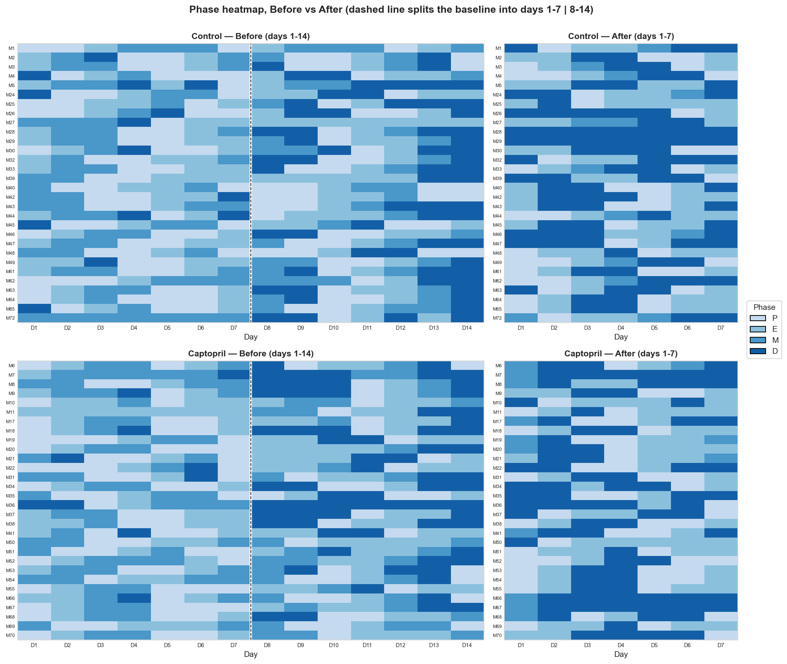
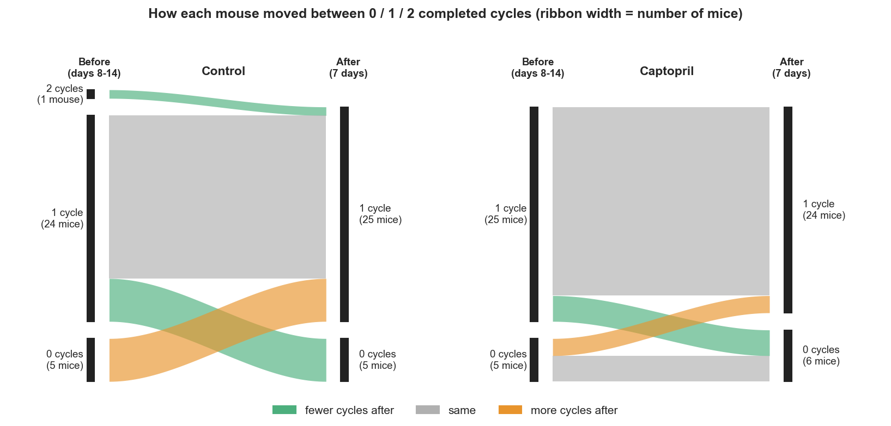
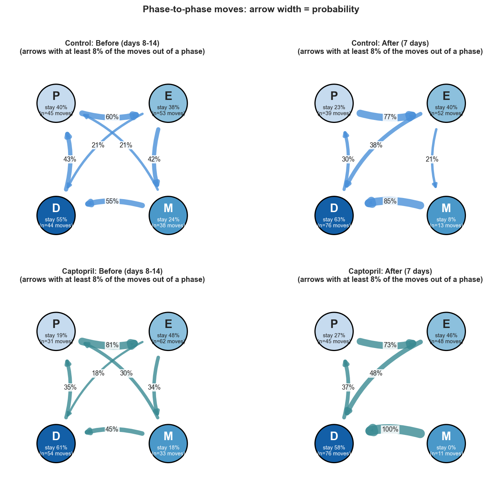
2. Bài nhóm TALIS — 6 phương án biểu đồ, số liệu thật từ Câu hỏi 2
Sáu hình dưới đây đều tính trực tiếp từ weighted_results_q2.csv (kết quả BRR-Fay đã kiểm chứng ở Module VKL 5-11) cộng với số liệu thô đã dùng trong bảng mục 2 của tài liệu đó — không có số nào gõ tay hay ước lượng thêm. Mục tiêu: cùng một bộ số liệu, so sáu cách trình bày để chọn đúng cho từng mục đích (slide tổng quan, slide nhấn một biến, bảng phụ lục chi tiết, hay minh hoạ riêng cho phần phương pháp).
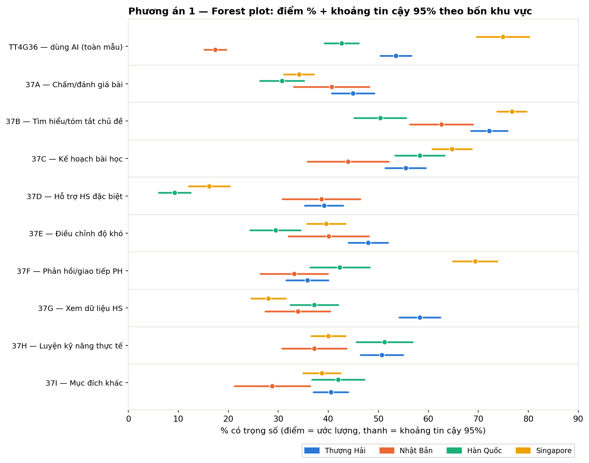
Đọc hình: tại mỗi hàng, nếu hai thanh ngang (hai khu vực) không chạm nhau, nghĩa là khác biệt giữa hai khu vực đó đủ chắc chắn để khẳng định; nếu hai thanh chồng lên nhau (ví dụ hầu hết các hàng TT4G37), không nên khẳng định chắc chắn khác biệt cho riêng cặp đó. Đây là phương án duy nhất trong ba phương án thể hiện trực tiếp phát hiện cốt lõi của mục 2bis, Module VKL 5-11.
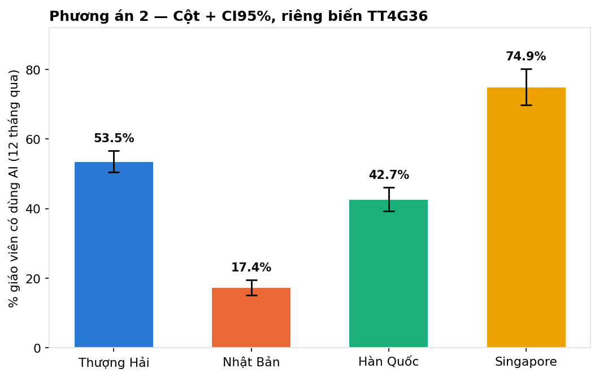
Đọc hình: chiều cao cột là % có trọng số, râu sai số đen là khoảng tin cậy 95%. Phù hợp khi chỉ cần nêu bật một biến "đầu đề" (TT4G36) — ví dụ slide mở bài hoặc trang kết luận — nhưng không dùng được khi cần so sánh cả 10 biến cùng lúc vì sẽ phải vẽ 10 hình riêng.
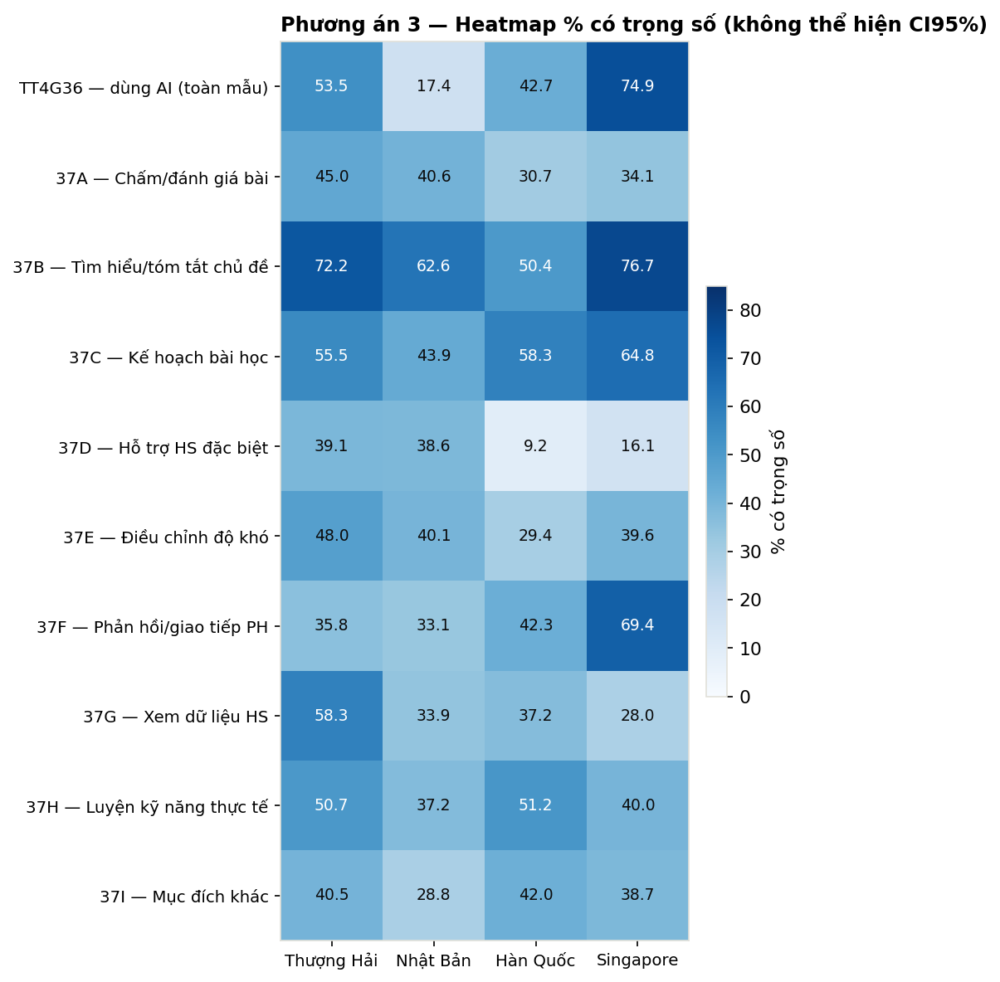
Đọc hình: màu càng đậm, % càng cao (xem thang màu bên phải). Ưu điểm là nhìn được toàn cảnh rất nhanh, nhưng nhược điểm quan trọng: heatmap KHÔNG thể hiện khoảng tin cậy, nên một cặp ô có màu khác nhau rõ rệt (ví dụ TT4G37D: Thượng Hải 39,1 so với Hàn Quốc 9,2) chưa chắc đã là khác biệt có ý nghĩa thống kê nếu không đối chiếu lại với bảng CI95% ở Module 5-11.
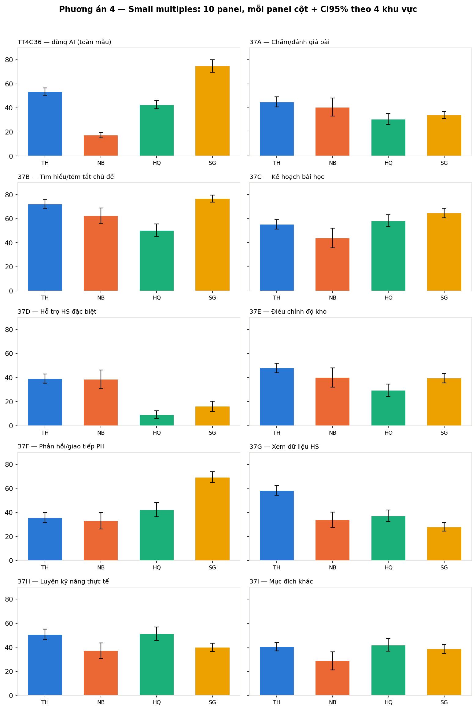
Đọc hình: mỗi ô vuông nhỏ là một biến, bên trong vẫn có đủ cột + râu CI95% như Phương án 2. Đây là cách dung hoà ưu điểm của Phương án 1 (giữ được CI95%) và Phương án 3 (nhìn toàn cảnh 10 biến cùng lúc) — đánh đổi là mỗi panel nhỏ nên khó đọc số chính xác, chỉ hợp để thấy "dáng" chung (panel nào Singapore luôn cao nhất, panel nào bốn cột gần bằng nhau).
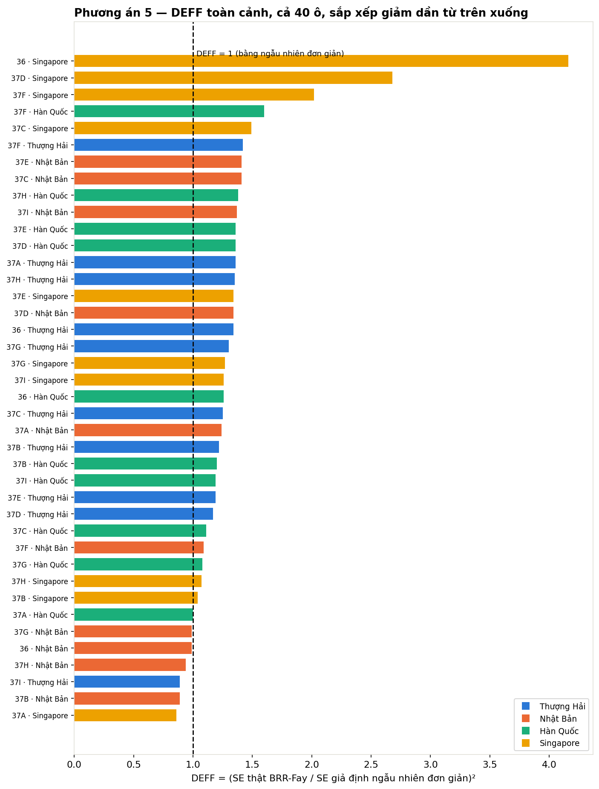
Đọc hình: thanh càng dài, mẫu càng lệch khỏi giả định "ngẫu nhiên đơn giản", tức SE/CI thật càng rộng hơn so với SE tính kiểu SPSS mặc định. Biểu đồ này biến bảng "top 5 DEFF" ở Module 5-11 thành một bức tranh đầy đủ: dễ thấy ngay các thanh màu vàng (Singapore) chiếm phần lớn nhóm thanh dài nhất, đúng như phát hiện đã nêu ở mục 3 của tài liệu docx.
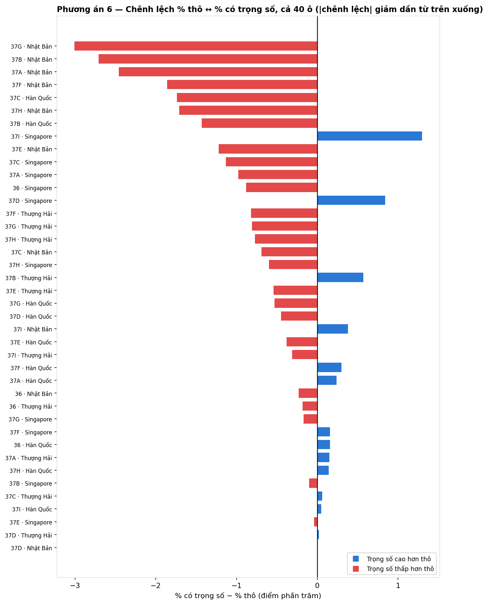
Đọc hình: hầu hết các thanh đều ngắn (trong khoảng ±2 điểm phần trăm), chỉ vài thanh như 37G-Nhật Bản hay 37B-Nhật Bản vượt quá 2,5 điểm. Đây là bằng chứng trực quan cho đúng câu đã viết ở mục 2 của tài liệu docx: trọng số hầu như không làm đổi điểm phần trăm nhiều, khác hẳn mức ảnh hưởng của nó lên SE/CI (so với Phương án 5).
Khuyến nghị cho bài nhóm: dùng Phương án 1 (forest plot) làm biểu đồ chính cho phần kết quả Câu hỏi 2 trong PPT/báo cáo — vì nó thể hiện đúng và trực tiếp phát hiện quan trọng nhất (chỉ TT4G36 tách biệt hoàn toàn). Phương án 2 làm slide mở đầu nêu bật riêng TT4G36; Phương án 4 (small multiples) thay thế Phương án 3 khi vẫn muốn nhìn toàn cảnh nhưng không mất hẳn thông tin CI95%. Phương án 5 và 6 nên để riêng cho phần Phương pháp/Thảo luận: Phương án 5 minh hoạ vì sao cần trọng số (ảnh hưởng tới SE), Phương án 6 minh hoạ vì sao kết luận mô tả không đổi nhiều (ảnh hưởng tới điểm %) — hai hình này bổ sung cho nhau, không thay thế forest plot ở phần Kết quả.
3. Bài cá nhân (hành vi học tiếp nối sau hậu biên tập AI) — chọn trước kiểu biểu đồ
Đề tài cá nhân của Khánh Linh ("Hành vi học tập tiếp nối sau hậu biên tập bản dịch Trung-Việt do AI tạo ra") hiện đang ở giai đoạn xây dựng khung lý thuyết và công cụ khảo sát, chưa thu thập số liệu thật — nên phần này KHÔNG vẽ biểu đồ với số liệu minh hoạ (tránh để người đọc nhầm là số liệu thật), mà chỉ lập bảng chọn trước đúng kiểu biểu đồ cho từng bước phân tích đã xác định, để khi có dữ liệu thật chỉ cần đổ số vào đúng khuôn đã chọn.
| Bước phân tích | Loại biến/kết quả | Kiểu biểu đồ nên dùng | Vì sao |
|---|---|---|---|
| 1. Mô tả hành vi rẽ nhánh (dừng lại / lưu trữ-kiểm chứng tiếp) | Biến phân loại 2 nhóm | Cột đơn hoặc cột chồng 100% (họ biểu đồ E/J ở Phần 1) | Biến chỉ có 2-3 giá trị rời rạc, cột đơn giản đọc nhanh hơn mọi kiểu phức tạp |
| 1. Mô tả thang đo phản tư (Likert nhiều câu) | Thang đo liên tục, N nhỏ (~30) | Dot/strip plot từng sinh viên (họ biểu đồ G ở Phần 1), KHÔNG dùng raincloud/KDE | N nhỏ: đường mật độ làm mượt (như kiểu I) dễ vẽ ra hình dạng phân phối không có thật; hiện từng điểm trung thực hơn |
| 2. Cronbach's alpha của thang đo phản tư | Hệ số tin cậy + tương quan biến-tổng từng câu | Cột ngang xếp hạng tương quan biến-tổng từng câu | Giúp thấy ngay câu nào "kéo" alpha xuống thấp, trực quan hơn một bảng số |
| 3. Độ nhất trí giữa 2 người chấm phản tư | Hai cột điểm phân loại hoặc liên tục | Ma trận nhất trí dạng heatmap (họ biểu đồ A/D ở Phần 1) nếu chấm theo loại; biểu đồ phân tán + đường y=x nếu chấm theo thang điểm liên tục | Heatmap lộ ngay ô nào hai người chấm lệch nhau nhiều nhất; scatter+đường y=x lộ xu hướng một người luôn chấm cao/thấp hơn người kia |
| 4. Tương quan riêng phần (phản tư ↔ điểm ghi nhớ trì hoãn, kiểm soát mức biết ban đầu) | Hai biến liên tục, N~30 | Biểu đồ phân tán (scatter) hiện từng sinh viên + đường hồi quy riêng phần | N nhỏ nên hiện đủ từng điểm, không chỉ hệ số tương quan; đường hồi quy minh hoạ chiều và độ mạnh quan hệ sau khi đã kiểm soát biến gây nhiễu |
Khi Khánh Linh có dữ liệu khảo sát thật, quay lại đúng bảng này: chọn hàng tương ứng với bước đang làm, vẽ đúng kiểu đã chọn trước — tránh tình trạng có số liệu rồi mới phân vân nên vẽ gì.
Hai hình dưới đây vẽ trước đúng CẤU TRÚC của hai kiểu biểu đồ ở hàng 3 và hàng 2 trong bảng trên, để Khánh Linh hình dung được hình dạng cuối cùng sẽ trông ra sao — toàn bộ điểm/cột trong hai hình này là số ngẫu nhiên do máy tính sinh ra, không lấy từ bất kỳ sinh viên hay phiếu khảo sát nào, vì đề tài chưa thu thập dữ liệu.
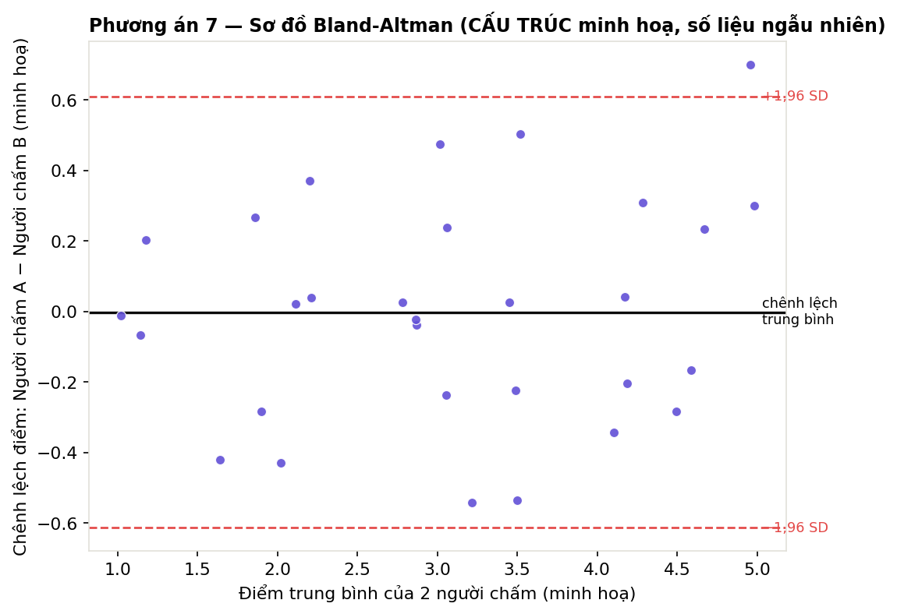
Đọc hình (khi có dữ liệu thật): nếu các điểm nằm rải đều quanh đường "chênh lệch trung bình" và nằm gọn trong hai đường đứt nét (±1,96 SD), hai người chấm được xem là khá nhất trí. Nếu điểm lệch hẳn về một phía đường chênh lệch trung bình, nghĩa là một người luôn chấm cao (hoặc thấp) hơn người kia một cách hệ thống — cần thảo luận lại thang chấm trước khi gộp điểm hai người.
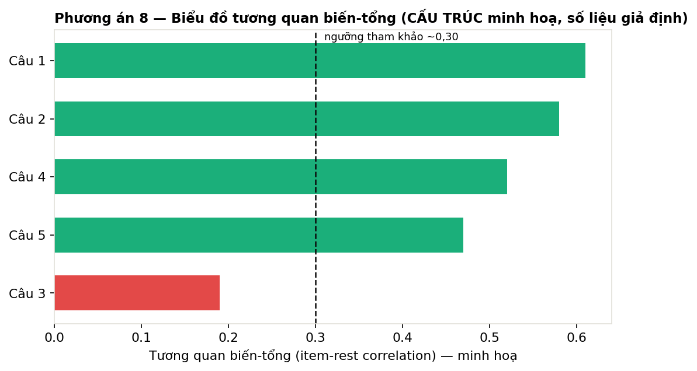
Đọc hình (khi có dữ liệu thật): câu nào có cột ngắn hơn ngưỡng tham khảo (thường lấy mốc khoảng 0,30, đường đứt nét trong hình) là câu "lạc nhịp" với các câu còn lại trong cùng thang đo — như "Câu 3" tô màu đỏ trong hình minh hoạ — nên xem lại cách diễn đạt câu đó hoặc cân nhắc loại khỏi thang đo trước khi tính Cronbach's alpha cuối cùng.
4. Ghi chú về kiểm chứng số liệu/code (áp dụng chung cho cả hai đề tài)
Script tạo 12 hình minh hoạ ở Phần 1 (gen_options.py, dự án Captopril) có một thói quen tốt đáng học theo: ngay sau khi viết thuật toán đếm chu kỳ, tác giả viết luôn một dòng kiểm tra tự động (assert) để xác nhận thuật toán đếm đúng trên một chuỗi biết trước kết quả, chạy lại dòng đó mỗi lần sửa code — không chỉ tin bằng mắt. Khi Khánh Linh tự tính bất kỳ chỉ số nào cho đề tài cá nhân sau này (Cronbach's alpha, Cohen's kappa, tương quan riêng phần), nên áp dụng đúng thói quen này: viết trước 1-2 trường hợp biết sẵn đáp án đúng, kiểm tra code ra đúng số đó, rồi mới chạy trên toàn bộ dữ liệu thật — đúng tinh thần "không bao giờ ghi dữ liệu bịa" đã áp dụng xuyên suốt các module khác trên trang này.
5. Việc cần làm tiếp
- Bài nhóm: lấy Phương án 1 (forest plot) ở mục 2 đưa vào phần Kết quả của PPT, kèm Phương án 2 làm slide mở đầu nếu cần.
- Bài nhóm: nếu phần Phương pháp/Thảo luận cần giải thích vì sao phải dùng trọng số, dùng cặp Phương án 5 + 6 (ảnh hưởng tới SE/CI rõ, ảnh hưởng tới % thì nhỏ) thay vì chỉ viết chữ suông.
- Bài nhóm: nếu muốn bản tiếng Trung/Anh, chỉ cần đổi nhãn khu vực và tiêu đề trục trong script, số liệu giữ nguyên.
- Bài cá nhân: khi có bộ câu hỏi khảo sát chính thức, đối chiếu lại đúng bảng ở mục 3 trước khi thu thập dữ liệu thật, để biết trước cần ghi lại loại dữ liệu nào (ai chấm, chấm theo thang gì) cho đủ vẽ đúng kiểu biểu đồ đã chọn.
- Bài cá nhân: khi có số liệu thật, đổ số vào đúng khuôn Phương án 7 (Bland-Altman) và 8 (tương quan biến-tổng) đã dựng sẵn cấu trúc — không cần nghĩ lại từ đầu.
- Bài cá nhân: áp dụng thói quen tự kiểm tra code (mục 4) ngay từ khi viết hàm tính Cronbach's alpha/kappa đầu tiên.